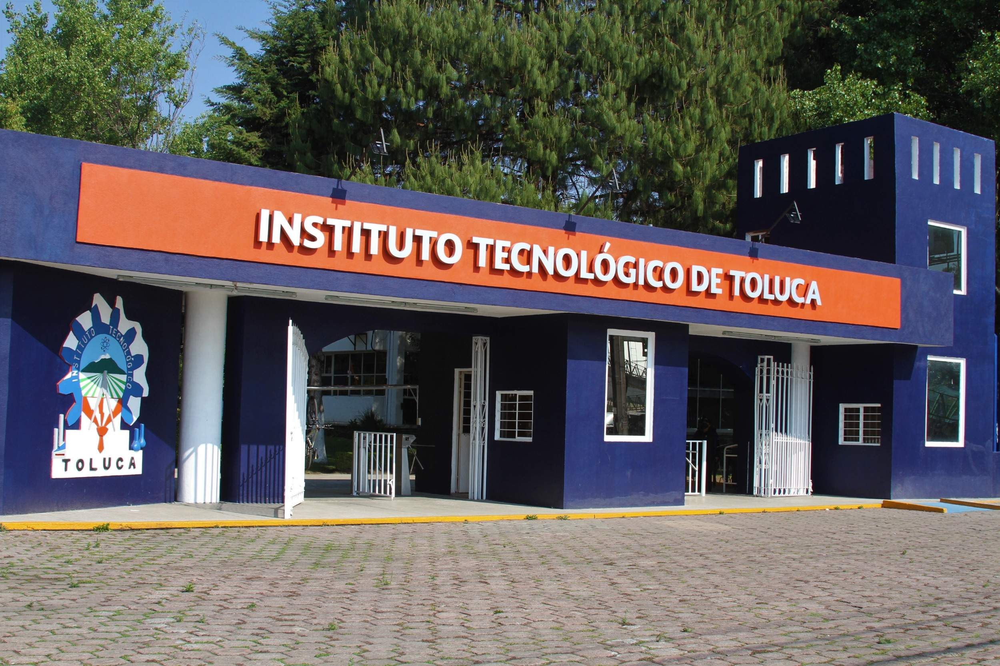

Croquis del ITToluca
Croquis de las instalaciones de la Sede Regional - Instituto Tecnológico de Toluca.
En su Etapa Regional, esta cumbre reúne a los mejores proyectos de distintos institutos y campus de la región, ofreciendo un espacio para presentar soluciones a problemáticas reales de los sectores público, social y privado. Durante el encuentro, los participantes tendrán la oportunidad de mostrar prototipos, recibir retroalimentación de expertos, participar en talleres y fortalecer vínculos con instituciones, empresas y posibles inversionistas.
El Instituto Tecnológico de Toluca, como sede anfitriona, abre sus puertas para ser punto de convergencia entre talento, innovación y oportunidades, fomentando el trabajo colaborativo y la proyección de ideas que buscan impactar positivamente en el desarrollo local, regional y nacional.
Croquis de las instalaciones de la Sede Regional - Instituto Tecnológico de Toluca.